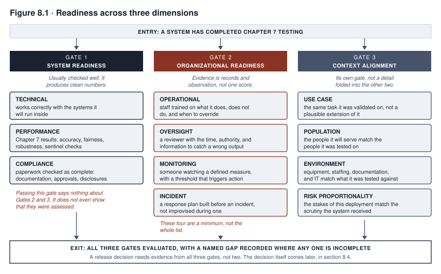
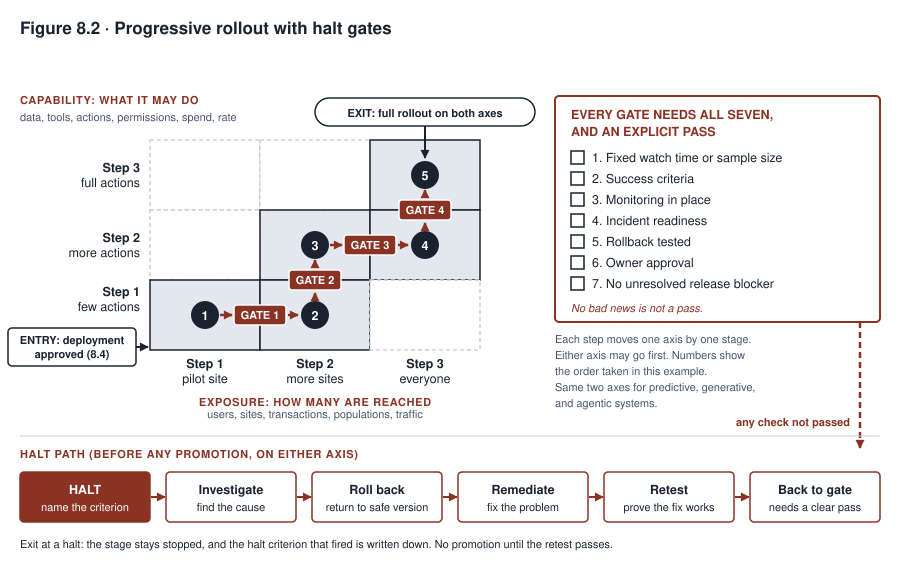

8. Deployment and Release
MEDASSIST is the hospital system from the running case. It is an AI model that raises alerts for clinical staff. Northfield, the organization in the running case, rolled it out to its community hospitals. A rollout puts a system into real use, and that step is called deployment. Before that rollout, MEDASSIST passed every technical gate that Chapter 7 would recognize as rigorous. A gate is a checkpoint a system must pass before it moves on.
Its performance metrics, the scores that show how well it does its job, were measured on held-out data from the academic medical center. Held-out data is data the model did not see while it was being built. The metrics exceeded the threshold set by Northfield’s model risk function, the part of the organization that manages the risks of using models. Its fairness testing covered the demographic groups in the academic center’s own patient population. Demographic groups are groups of people defined by traits such as age or race. The testing showed no disparity that the review considered serious enough to act on. A disparity is a gap in how the model treats different groups. Its technical integration with the electronic health record, the hospital’s digital patient chart, was tested and stable.
A deployment committee then reviewed the system before its rollout to the six community hospitals. The committee asked at length whether the model performed well. Nobody in the room asked, in those words, whether the six hospitals matched the place where the system had been built and tested.
The system was ready. The question that would have caught the gap was never on the agenda. The agenda was built around system readiness alone. System readiness is not the only kind of readiness a deployment decision requires.
A rushed deployment process collapses three questions into one. First, is the system ready? Second, is the organization receiving it ready to operate it, to notice when it misbehaves, and to step in when it does? Third, does the context it was validated in still match the context it is about to run in? Validated means shown to work through testing. Context means the use, the people, and the surroundings the system works in.
A system is usually ready for production before the organization around it is. Production means live use. Deploying anyway, because the technical checklist came back clean, is a recurring failure at this stage of a system’s life. A deployment review can miss it even when every question the review asked was answered honestly.
What you will be able to do
- Evaluate deployment readiness along three separate dimensions: system readiness, organizational readiness, and context alignment. Explain why passing one does not mean passing the others.
- Detect a mismatch between the context a system was validated in and the context it is about to be deployed into.
- Design a progressive rollout, which expands a release in stages. Fix its blast radius (how much a failure could affect) and its halt criteria (the conditions that stop it) before launch. Do this for the user population and for the permission scope (what the system is allowed to do). This applies to every system, including an agentic system (one that takes actions on its own).
- Specify a rollback mechanism, a way to return to an earlier version. Include the case where actions already taken cannot just be stopped.
8.1 System readiness
System readiness is the dimension every deployment process checks. It has three parts of its own. A checklist that names only “testing complete” tends to blur them together.
Technical readiness asks whether the system works correctly with the infrastructure it will run inside. Infrastructure means the surrounding computer systems. Examples are the electronic health record, the loan origination system, and the applicant tracking system. The loan origination system is the software that handles loan applications. The applicant tracking system is the software that tracks job applicants. Each of these has its own interface behavior, meaning its own way of sending and receiving information. A model that performs well in isolation can still fail against that behavior in practice.
Performance readiness is the set of results that Chapter 7 produces. These results include accuracy against the appropriate metric, and a fairness decision that is made and documented. They also include robustness findings that have been addressed. Robustness is how well the model keeps working when conditions change or inputs are unusual. A generative system produces new content, such as text. A generative or agentic system also needs the evaluation results specific to its class, including sentinel results. A sentinel evaluation is a fixed check, run periodically on a generative system’s real work, that Chapter 7 describes.
Compliance readiness asks whether the paperwork a specific deployment requires is complete. Compliance means following the rules and laws that apply. The paperwork includes documentation, approvals, and disclosures, which are items the rules require an organization to share. These requirements come from the regulatory obligations in Chapter 2 and the system’s inventory record in Chapter 3. A review must check that the paperwork is complete. It must not assume so because the technical work is done.
The three parts need different kinds of evidence. Performance is the easiest of the three to produce a clean number for. A review that verifies only performance has not verified system readiness at all. It has verified only the part that happened to be measured.
These three parts are a minimum. A fuller review also checks the following:
- security and resilience (the ability to recover) against foreseeable attack and failure
- privacy exposure that the deployment newly creates, meaning new risk to people’s personal data
- safe and fail-safe behavior, which means failing in a safe way, when an input or dependency is malformed
- supplier and supply-chain dependencies that the system inherits, meaning the outside companies and parts it relies on
- a tested recovery path
None of these is guaranteed by “integration,” “Chapter 7 results,” or “documentation complete” alone.
8.2 Organizational readiness
Organizational readiness is a harder question than system readiness. A deployment review can skip it without anyone deciding to skip it. The reason is that it asks about the receiving organization, not about the system. A review convened to approve a system tends to stay focused on the system.
Organizational readiness has four parts.
Operational readiness asks whether the staff who will work alongside the system have been trained. They need to know what it does and what it does not do. They also need to know what to do when it disagrees with their own assessment.
Oversight readiness asks whether a human who reviews the system’s output can catch a wrong output. That person needs the time, the authority, and the right information to do it. Chapter 9 develops this at length, starting with automation bias, the habit of trusting a machine’s output too much.
Monitoring readiness asks whether anyone is watching the system’s behavior in production at all. Someone must watch a defined measure. A defined threshold must trigger a response.
Incident readiness asks whether a response plan exists before an incident occurs. An incident is a failure or harmful event involving the system. Chapter 10 will show repeatedly that an organization that improvises its first response during an incident makes worse decisions than one that follows a plan built in advance.
These four parts are a minimum. A review that stops at them has covered ground but not the whole of it. A fuller readiness check also names the following:
- Capacity and staffing. Enough trained people must exist to do the operational and oversight work, not just one person who happens to be available today.
- Business continuity and a manual fallback. This is what the organization does when the system is unavailable.
- Support and escalation paths for the people who use the system’s output. An escalation path is a route for passing a problem to someone with more authority.
- Security operations and privacy operations specific to what this system newly exposes.
- Records and retention practices sufficient to reconstruct a decision later. Retention is how long records are kept.
- A plan for communicating with the users or subjects of the system’s decisions.
- Affected-person rights and a recourse path for someone who wants to contest an outcome. A recourse path is a way to ask for a fix.
- Procurement and supplier readiness. Procurement means buying. A vendor’s own support and change commitments are part of what “ready” depends on.
- Accessibility, which means that people with different abilities can use the system.
- A change-management process for updating the system without silently invalidating the readiness work already done.
Each item on this expanded list needs a named owner. It needs the evidence that supports calling it ready, and a capacity estimate where staffing is the question. It needs an exercise or test where one applies. It also needs a stated readiness result. A checkbox marked complete because the topic was discussed does not count.
The system is usually ready before the organization is. A model can pass every performance and compliance gate described in section 8.1 and still not be ready. The nursing staff who will act on its output may have received no training on what an alert threshold means. An alert threshold is the level at which the system raises an alert. Nobody may have been assigned to watch for a rising rate of overridden recommendations. An override happens when a person rejects what the system recommends. No incident plan may exist for the day the model is wrong in a way that matters. Deploying in that state is an organizational risk, not a technical one. It is the risk the case in focus was built around.

Figure 8.1 shows three gates. A single review has to clear them separately. They are not one list with items checked off in any order. Context alignment is its own independent gate. It is not a detail folded into the other two.
The first gate, system readiness, is the one most deployment processes already check well, because it produces numbers. These are a performance figure, a test result, and a compliance checkbox.
The second gate, organizational readiness, produces a different form of evidence, and it is not a worse one. That evidence is staffing records, workload exercises, direct observation, and interviews. It is not a single clean score. A review that has no comparable number for this gate is still required to run it.
The third gate, context alignment, is covered in full in section 8.3.
The figure’s argument is that a review clearing only the first gate has cleared only one of the three parts of deployment readiness. It has cleared the part that happens to be easiest to measure. A release decision follows only once all three gates carry evidence.
8.3 Context alignment
A system validated in one context does not carry that validation automatically into a different one. Organizations usually discover this the hard way, and the mechanism is almost always the same. It is scope creep. In scope creep, a system approved for a specific use case, a specific population, and a specific environment is extended to something adjacent. The new use looked similar enough that nobody ordered a fresh review.
MEDASSIST’s deployment to Northfield’s community hospitals followed this pattern. Nobody framed it as extending the system’s scope. It was a rollout that treated “the same hospital system” as the relevant unit of similarity. The right units were the same patient population, the same equipment, and the same documentation practice. These decide whether a model’s learned pattern transfers, as Chapter 5 explains. A learned pattern is what the model picked up from its training data.
Context alignment has four checkpoints.
Use case alignment asks whether the task the system is now being asked to do matches the task it was validated on. A plausible extension of that task is not enough.
Population alignment asks the representativeness question that Chapter 5 raised. Representativeness is whether the people in the test data look like the people the system will serve. Here the question becomes a deployment gate. It is no longer a data-governance concern in the abstract.
Environment alignment asks whether the operational conditions match what the system was tested against. These conditions include equipment, staffing, documentation practice, and IT infrastructure.
Risk proportionality asks whether the stakes of the deployment match the level of scrutiny the system received. Suppose a system was validated for a low-stakes pilot, which is a small trial. If it is then deployed at full production scale without a fresh review, its risk profile has changed. Its evidence base has not.
Some deployment reviews check system readiness and organizational readiness, and then treat context alignment as implied by the first two. Such a review misses the specific failure that put MEDASSIST into a community hospital nobody had separately evaluated it against.
Naming the four checkpoints does not give a team a way to act on what they find. A context comparison record fills that gap. It turns the comparison into a decision.
The record names the validated context and the proposed context side by side. It compares them across task, population, input process, equipment, workflow, incentives, human roles, stakes, law, and physical or operational environment. It then rates how material each difference is. A material difference is one large enough to matter for the decision. The record also states the evidence behind each rating.
The comparison resolves into one of four dispositions. A disposition is the recorded outcome.
- Equivalent. No material difference was found, so the existing validation carries over.
- Mitigated and revalidated. A difference was found and closed before deployment, through additional testing or a control. A control is a safeguard.
- Restricted or piloted. The deployment proceeds only for a narrower scope or a limited trial, while the difference is monitored.
- Not approved. The difference is material enough that deployment does not proceed in this context at all.
The team must decide two things before the comparison is run. One is who approves a mismatch. The other is which disposition each comparison result requires. If the team waits, the decision gets negotiated after a difference has been found, when someone would rather not slow the launch down.
The same four checkpoints apply directly to a predictive system with no clinical setting at all. A predictive system uses data to predict an outcome. Take a credit model, which helps decide who receives a loan. It was validated on applications originated through a bank’s branch network. It is then extended to applications originated through a newly acquired online channel.
That change alters the model’s population. Online applicants skew differently from branch applicants on income documentation and credit history. It also alters the model’s environment. The data captured at the point of application differs by channel. That difference can silently degrade the model’s inputs, which means it can make them worse without anyone noticing.
Treating “the same bank, the same product” as sufficient similarity is the credit-model version of the mistake MEDASSIST’s rollout made. The same four checkpoints catch it. A channel-specific checkpoint is not needed. This is why the checkpoints are stated as general dimensions. They are not a clinical checklist that happens to generalize.
8.4 The deployment decision
A deployment review should conclude in one of four documented outcomes. The outcomes are approved, approved with conditions, denied, and deferred. Each outcome has a named person accountable for it. An approval must never be inferred from the absence of an objection.
The record behind the outcome needs more than the outcome itself. The record includes the following:
- the exact evidence version each finding was based on
- the reviewing body’s quorum, which is the minimum number of members who must be present, and its authority to decide
- any conflicts of interest disclosed
- any dissent, noted and not resolved by a silent majority vote
- the monitoring conditions the deployment will run under
- confirmation that rollback readiness has been checked and not assumed
- protections for the people affected by the system’s decisions
- an expiry date on the approval itself
- the specific triggers that would reopen the review before that expiry
Approved names the reviewer, the date, and the specific evidence the approval rests on. Then a later question about why the system was deployed has a more specific answer than the bare claim that it passed review.
Approved with conditions is an outcome that deployment reviews reach readily and then do not honor. A condition that is not specific and not tracked is only a note. Such a note made the reviewers feel the concern had been addressed. A real condition states what must happen, by when, and who verifies it. It also states the consequence if the condition is not met. It belongs in the system’s governance record from Chapter 3. Someone checks it on a schedule, so it is not filed and forgotten.
FAIRLEND, the lending model from Chapter 7, shows how this works. Its equal-opportunity decision is the kind of finding that should attach as a tracked condition. It should not be treated as a closed matter. The condition has to be a safe one. It is not the per-group pricing adjustment, which means setting prices differently for each group. Chapter 7 identified that adjustment as its own source of fair-lending exposure, a legal risk, and it requires legal review. A safe condition looks like one of these:
- a scheduled revalidation of the decision rule
- documented completion of that legal review
- an added recourse path for declined applicants
- a restriction on where the model is used
Any such condition should be tracked with an owner and a date. The model risk function should verify it against the engineering or policy backlog, which is the list of pending work.
Denied names the specific readiness gap that produced the denial. It also names what would need to change to reopen the review. A bare rejection gives the requesting team nothing to act on.
Deferred states explicitly what additional evidence or work is needed before the decision can be made at all. That distinguishes a deferral from an approval that quietly never got finished being reviewed. A deferral is a decision to wait for something specific.
8.5 Progressive rollout
A decision to proceed with deployment is not a decision to expose the entire intended population on day one. Progressive rollout is the discipline of expanding exposure deliberately. The criteria for each expansion are decided before the rollout begins. They are not improvised once it is underway.
Blast radius is the size and consequence of what a failure could affect at the current stage of rollout. Staging a rollout means starting with a blast radius small enough that a failure is recoverable and costly lessons are cheap. The team then expands only once the current stage has run long enough, and been watched closely enough, to justify the next one.
A rollout has two axes. The exposure axis controls how many are reached. That means the users, sites, transactions, populations, or traffic. The capability axis controls what the system is allowed to do at that stage. That means the data, tools, actions, permissions, spend, or rate. Each stage of a rollout is a chosen position on both axes at once.
The two axes, population and permission or capability, are not a choice between two different systems’ rollout styles. They are two independent controls that every system’s rollout needs. A narrow action can still touch many people, expose sensitive data, create an unfair exclusion, or overload an operations team. This holds regardless of how few users can currently reach it. The reverse is also true. A wide population exposed to only a narrow, low-consequence capability can be a safely staged rollout even on day one.
Halt criteria have to be defined before launch, on both axes. Halt criteria are the conditions that stop a rollout. They are stated as specific, measurable conditions. Examples are an error rate threshold, a specific category of complaint, or a specific volume of overrides. These triggers force an automatic pause, not a call made under the pressure of a rollout in motion. A team midway through a launch it wants to succeed is poorly placed to decide whether a concerning signal is serious enough to stop for.
Each promotion needs the following before it is granted. A promotion is the move from one stage to the next.
- a fixed observation window or sample size
- stated success criteria
- adequate monitoring coverage
- incident readiness
- a rollback test
- an owner’s approval
- no unresolved release blocker, meaning no known problem that must be fixed before release
A halt sends the release to investigation, rollback, remediation, and retest. Remediation means fixing the problem. A halt is not a quiet pause that resumes once attention moves elsewhere.
TALENTSCREEN is a hiring tool. When its scheduling component is extended from a recommendation-only tool to one that books interviews autonomously, the change illustrates the capability axis. The component moves through three stages. In the first, it can propose times but cannot commit them. In the second, it can commit within a narrow set of pre-approved time blocks. In the third, it has fuller autonomy.
The capability axis is staged alongside the population axis, not instead of it. The population axis is how many candidates and recruiters the tool is exposed to at each stage. A plan that stages only capability, and reaches every candidate on day one, controls what actions the system can take. It does not control the exposure that a data-handling or fairness failure would have.

Figure 8.2 shows two independent axes staged together. It is not a single track with an agentic exception branching off it. A stage that has produced no alarming signal is not automatically ready to expand on either axis. Each gate requires a positive check. The check compares the stage’s results with the halt criteria set before launch, a fixed observation window, and the stated success criteria. A rollout that expands on schedule, whatever the current stage showed, has turned a safety gate into a calendar entry.
The two axes together also make the point that section 8.5 argues. Take a system given full population exposure on day one but restricted to a narrow, low-consequence capability. It is staged correctly on the capability axis. It still carries whatever exposure risk the population axis controls. Neither axis substitutes for the other.
8.6 Rollback
Rollback means returning to an earlier version of the system. Treated as a single action, it understates what recovering from a bad release requires. A gap lies between “we can roll back” and “we can recover.” An organization discovers that gap, under pressure, when its plan turns out to cover less than it thought.
A recovery plan, not a single rollback step, has to do all of the following:
- Stop new harm first.
- Preserve evidence before anything is changed further. An overwritten log or a reset state can destroy the record a later investigation needs.
- Decide between rolling back and fixing forward. A forward fix repairs the problem in the live version, and it is sometimes safer once new harm has been stopped.
- Restore a compatible combination of model, code, data, prompt, configuration, and dependencies together. A prompt is the written instruction given to a generative model. Dependencies are the other software the system relies on. Reverting one without the others can produce a combination that was never tested.
- Reconcile pending and already-completed actions against the restored state, which means checking that the records and the actions agree.
- Notify operators and, where required, affected people.
- Verify that the recovered service is working. A successful rollback command does not guarantee a working system.
- Monitor afterward for recurrence.
None of this helps much if the plan has never been exercised before the day it is needed. A plan that exists only on paper regularly turns out, once invoked under pressure, to depend on an assumption that quietly stopped being true months earlier.
Recovery needs three things.
First, it needs a technical mechanism. That means specific versions to return to across every layer in the list above, and a tested procedure for doing so. Chapter 6 required version-control discipline, which means keeping track of every version, for this reason.
Second, it needs a clear authority. A named role must be empowered to trigger recovery without convening the same committee that approved the original deployment. A process that requires the same lengthy approval as the original launch will arrive too late to limit the harm it exists to prevent.
Third, it needs to have been tested as an exercise, not just designed. A plan can look complete on paper and still fail under real conditions. Chapter 10’s incident response discipline will show this gap recurring across systems that treated an untested plan as an adequate one.
Reverting a model or application stops its future behavior. It does not undo a decision, a message, or a record change that the behavior already produced. A predictive system’s denial that was already issued needs reconciliation, notification, and remedy. So does a generative system’s output that was already published or relied upon. An agentic system’s committed actions need the same.
Agentic systems make this harder, though the problem is not unique to them. One run can combine several tool calls, permissions, retries, and state changes before anyone intervenes. A tool call is a request the system makes to other software. Reverting to a prior model version halts further actions. It does not undo actions the system already took while running the version being rolled back. It does not resolve queued or duplicated actions still in flight. It does not by itself address stale cached state, which is old saved data, or a client built against the version being removed.
Consider the scheduling component of TALENTSCREEN. Suppose it is rolled back after committing a batch of interview times under a permission scope later found to be too broad. The commitments stay in place unless recovery explicitly includes a compensating-action step. That step means canceling or reconfirming the affected appointments. It also means addressing any remedy owed to affected candidates. Reverting the code path that produced the original commitments is not enough.
A recovery plan for an agentic system that only halts further actions has handled just part of the problem. It also needs a kill switch, which is a control that stops the system. It needs a manual fallback. It needs a way to reconcile and compensate for what already happened.
Case in focus: a deployment that passed every gate it was asked about
MEDASSIST · Hypothetical, following the running case
Northfield’s deployment committee for extending MEDASSIST to the community hospitals reviewed the evidence its process asked for. That evidence included three items. The first was the model’s validated performance on the academic medical center’s data. The second was technical integration testing against each community hospital’s own instance of the electronic health record. The third was sign-off from the clinical informatics team that the alert interface displayed correctly on each site’s terminals. That team is the staff who run the hospital’s clinical information systems. Every item on the committee’s checklist was true, and each could be verified.
The checklist did not ask whether the community hospitals’ patient population, equipment, and documentation practice resembled the academic center’s closely enough for the model’s learned pattern to transfer. That is the representativeness question Chapter 5 develops in full. The checklist also did not ask whether community hospital nursing staff had been trained on what an alert threshold meant. These staff had not been part of the model’s development or pilot. Nor did it ask whether they knew what to do when their clinical assessment disagreed with an alert.
The deployment proceeded to all six community hospitals simultaneously, not as a progressive rollout. The committee’s approval was framed as a single decision covering the full extension.
There was no limit on blast radius. No halt criteria were defined in advance, beyond a general instruction to escalate “any concerning pattern.” That standard was vague enough that nobody could point to a threshold being crossed. This stayed true even once the representativeness gap began producing late and missed alerts.
The pattern was eventually noticed, months later. It came to light through the monitoring process Chapter 9 describes. It did not come from anything the readiness checks above had been built to catch. By then the organization had no progressive rollout, so there was no smaller footprint to roll back to. It also had no rollback mechanism that had ever been tested, because nobody had built one. The reasonable-sounding assumption was that a model this thoroughly validated at the academic center was unlikely to need it.
No reviewer in this sequence failed to do their job. The committee answered every question its process asked, correctly and honestly. The failure was in what the process asked about. It checked system readiness rigorously. It never named context alignment and organizational readiness as separate questions at all. Suppose the review had been built around the three dimensions and not around system readiness alone. It would have raised the representativeness question before the rollout rather than after the harm. It would also have had a progressive rollout and a tested rollback mechanism in place. Northfield eventually had to manage the situation without either.
Summary
Deployment readiness is three questions, not one. A review that answers only the first has not cleared a system for production. It has only confirmed that the system itself works.
System readiness covers technical, performance, and compliance readiness. Deployment processes already check it well. Organizational readiness covers operational, oversight, monitoring, and incident readiness, plus the broader minimum list in section 8.2. Reviews can skip it without anyone deciding to skip it. A system is usually ready before the organization around it is. Deploying anyway is a recurring failure at this stage.
Context alignment catches scope creep. In scope creep, a system validated for one use case, population, and environment gets extended to an adjacent one that nobody separately evaluated. The review checks use case, population, environment, and risk proportionality. It does so through a context comparison record with a named disposition.
The deployment decision itself should resolve into one of four documented, accountable outcomes. The outcomes are approved, approved with conditions, denied, and deferred. Conditions must be specific and tracked enough to be real conditions. A denial names the gap. A deferral specifies the missing evidence. The record states the evidence version, the authority, and the dissent behind the outcome.
Progressive rollout stages exposure and capability as two independent axes for every system, agentic systems included. It runs against halt criteria fixed before launch. Recovery needs a tested technical mechanism across every affected layer. It needs a clear authority to trigger it. For an agentic system specifically, it needs a compensating-action step that addresses actions already taken, not only halting further ones.
Evidence carried forward. The deployment decision produces a release record for the rest of the book. The record includes:
- the exact versions and evidence bound into the decision
- the conditions and their tracking status
- the constraints and residual risks the deployment carries, where a residual risk is a risk that remains after safeguards are in place
- the staged-rollout position
- the recovery plan
Chapter 9’s monitoring program is built to watch these constraints, risks, and versions. It does not watch a generic list that ignores what the deployment decision set.
Review questions
COMPREHENSION
Explain why a system can pass every test in Chapter 7 and still not be ready for deployment, using the distinction between system readiness and organizational readiness.
Define scope creep. Then explain why treating “the same organization” as the relevant unit of similarity is not sufficient for context alignment.
APPLIED
A team is preparing to extend a fraud-detection model to a second payment channel that the organization considers similar. The model was validated on transactions from one payment channel. Using section 8.3’s four checkpoints, identify what would need to be verified before this counts as an aligned deployment instead of scope creep.
Design a halt criterion for a customer-support generative system’s progressive rollout. State it as a specific, measurable condition, not a general instruction to escalate concerning patterns.
SPOT THE RISK
- A deployment committee approves a system “with conditions.” The conditions listed are to “monitor closely” and “review performance regularly.” Identify what is missing from this approval. Explain how you would rewrite it so the conditions are trackable.
COMPARE AND DECIDE
- An organization must decide between two options. One is to deploy a validated model to its full intended population immediately, which captures the benefit sooner. The other is to stage the rollout, which delays full benefit but limits blast radius. State what each choice costs. Say what you would need to know about the system’s risk profile to decide between them.
RUNNING CASE
MEDASSISTUsing the case in focus, identify the specific readiness question that was never asked. Name who should have been responsible for asking it. Explain what a properly designed progressive rollout would have looked like for the community hospital extension.
A system that is deployed is now generating the evidence that Chapter 9 needs to watch. The next chapter turns to operations and monitoring. The case in focus has already previewed an uncomfortable fact about that work. The failure MEDASSIST produced at the community hospitals was invisible to every readiness check described above. It became visible only once someone was watching the system in production. Monitoring is a different discipline, with its own methods and its own blind spots. It also has its own hard problem. Some systems prevent harm, and when prevention works the harm leaves no trace.